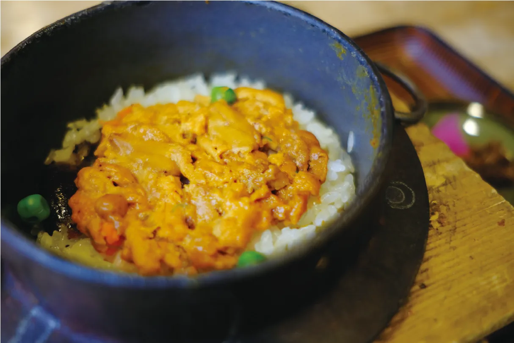

No. 1
Uni Kamameshi
Rice cooked with generous amounts of fresh sea urchin from the Kitaura coast. Each iron pot is cooked for about twenty minutes, with close attention to the heat and timing.
Enjoy the rich flavor of the sea urchin together with the fragrant, crispy rice at the bottom of the pot.